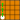
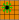
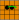
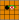

How to play

To win, get a piece to the other side of the board (or capture all your opponent's pieces).

Pieces can move 1 square in any direction, including diagonally.

Pieces can jump over other pieces of the same colour.

Jumping over the opponent's piece captures it.
If you can capture something, you must capture something.